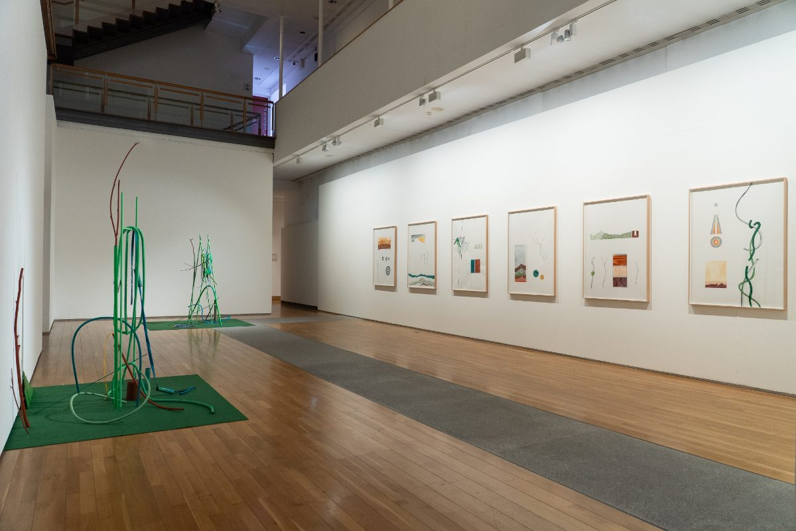
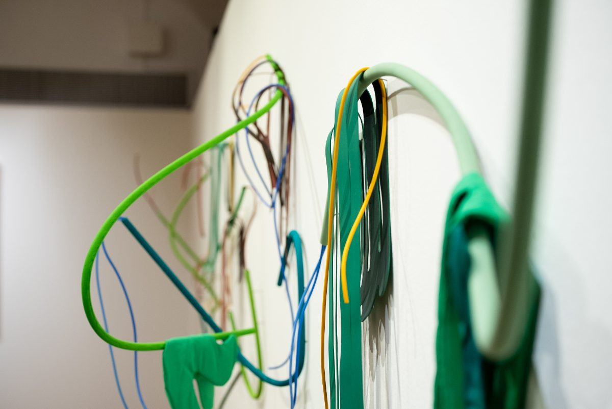
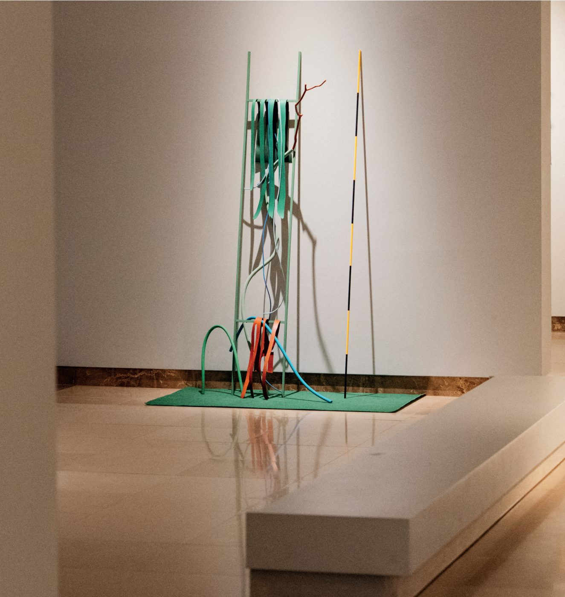

Escultura, desenho, instalação e livros de artista.
Este sítio está a ser reconstruído de raiz. Entretanto, ficam aqui as notícias mais recentes e as formas de me contactar.
Agora
ECO·NOMIA: As Regras da Casa
Centro Cultural de Cascais, Fundação D. Luís I · encerra a 27 de Setembro

Vista da exposição ECO·NOMIA: As Regras da Casa. Fotografia: Júlia Lomba.
A exposição encerra este domingo, 27 de Setembro. No último dia, às 16h, faço uma visita comentada — uma ocasião para a percorrermos em conjunto e conversarmos sobre o trabalho antes da desmontagem.
Ao longo destes quatro meses, desenhos da série Morfometrias, esculturas Naturfatura, três impressões de grande formato e o Dendrograma, numa nova configuração, partilharam o piso 0 da Fundação D. Luís I numa lógica de consociação: formas e matérias distintas a coabitar a mesma casa.

Pormenor. Fotografia: Júlia Lomba.
Visita comentada
Domingo, 27 de Setembro, 16h. Entrada livre.
Morada
Centro Cultural de Cascais, Fundação D. Luís I Av. Rei Humberto II de Itália, n.º 16, Cascais
Com o fim da exposição, partilho também o catálogo digital de ECO·NOMIA, com textos de Salvato Teles de Menezes e Inês Ferreira-Norman e o registo fotográfico das obras. Pode ser consultado aqui.
Deixo um agradecimento à equipa da Fundação D. Luís I e a todos os que visitaram a exposição ao longo destes meses.
White Box #1: Intervalos
Museu do Caramulo · prolongada até 18 de Outubro

Vista da exposição White Box #1: Intervalos, Museu do Caramulo.
Com curadoria de José Maçãs de Carvalho, a exposição reúne trabalhos meus e de Daniela Krtsch, Fabrizio Matos e João Fonte Santa, criados em residência na Serra do Caramulo a partir das coleções do museu.
Catarina Leitão works in sculpture, drawing, installation and artist's books. This site is being rebuilt from scratch. Current news is above, and the quickest way to reach me is c@catarinaleitao.net.